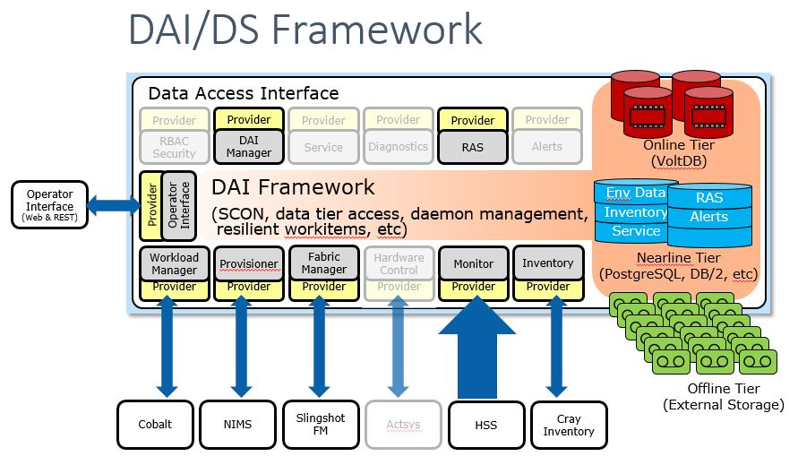

Welcome to UCS
The Unified Control System (UCS) is intended to be part of a comprehensive software solution for the deployment and management of High Performance Computing (HPC) systems. The control system not only provides the system environment for the execution of applications and their workflows, but also provides the obvious point of control and service for administrators and operation staff who must configure, manage, track, tune, interpret and service the system to maximize availability of resource for the applications. UCS is a flexible software stack that assists development of new designs by OEMs and system vendors, often from new hardware targeted specifically for HPC. A unique feature of UCS, as compared to previous systems, is integration provided by a data-centric architecture. The control system gathers, organizes, and tracks system data to provide an accurate view of the system at all times. The data is organized by a Data Access Interface (DAI) component, and stored into the Data Store (DS) component. The DAI is an integrating component and is able to glean much of the data it organizes from its interaction with the other components.
{kind=link}
For access to the latest code, clone the git repo (primarily for developers).
$ git clone https://github.com/unifiedcontrolsystem/ucs.git